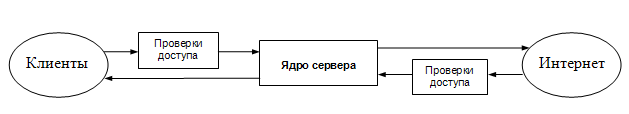
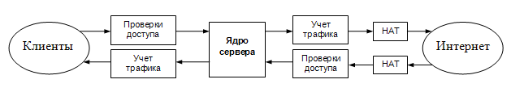
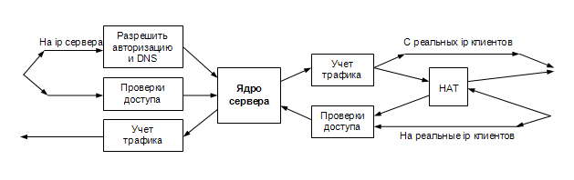

| Биллинговая система NoDeny. Настройка фаервола |
Управление доступом, включая разные ограничения и управление скоростями, реализуется с помощью фаервола, которым в свою очередь управляет агент доступа. Последний запускается на удаленном маршрутизаторе либо же, при использовании монолитного решения «все в одном», на том же сервере, где и ядро NoDeny и БД.
В начале этой главы будет описана теория (философия...) NoDeny, которую вам, вероятно, прочесть когда-нибудь придется, если вы планируете построить масштабную сеть. Либо же воспользуйтесь ссылкой `не хочу читать - хочу рабочий пример`.
Вы должны придерживаться такого принципа: управлять трафиком как можно ближе к клиенту, т.е на самом ближнем к клиенту устройстве, способном запустить агента доступа. В этом случае мы избавим свои магистрали от ненужного трафика, сможем проконтролировать трафик, который идет не через центр, например, напрямую с маршрутизатора, обслуживающему один район, на маршрутизатор, обслуживающий другой район. Кроме того, разумно использовать сегментирование в одном районе, так чтобы между сегментами трафик шел через маршрутизатор, в этом случае мы сможем блокировать трафик, идущий от нелегальных или заблокированных клиентов, в чужие сегменты.
Сегментирование это тема не данного раздела. Схему, когда к маршрутизатору подключено несколько клиентских сегментов и необходимо блокировать/шейпить трафик между клиентами, рассмотрим позже. Сейчас рассмотрим простейшую схему: есть маршрутизатор с двумя интерфейсами, один «смотрит» в локальную сеть, другой - в интернет. Необходимо разрешать доступ в интернет только авторизованным незаблокированным клиентам, а также считать трафик.
Правила фаервола условно разделяются на 2 части: статические, которые формируются при старте системы и динамические, которые формируются скриптами NoDeny. Статические правила обычно задаются в /etc/rc.firewall, обеспечивают доступ к авторизации, днс, статистике, трансляцию адресов (нат) и др. функции. При незапущенных агентах NoDeny, доступ в интернет для всех закрыт.
Рекомендуется осуществить настройку таким образом:

По рисунку видно, что проверке подлежит только входящий трафик, а исходящий считается проверенным и разрешается без дополнительных проверок. Под проверкой понимается контроль прохождения через маршрутизатор трафика каждого абонента. Приведенную схему заменяем на более детальную:

Здесь видно, что учет трафика происходит при выходе пакета из маршрутизатора, но обязательно до попадания в НАТ, который преобразует локальный ip во внешний (`белый ip`), а нам необходим учет именно клиентского трафика. Если учесть все моменты, то получим окончательную схему:

«Реальные ip клиентов» - это ip, которые не требуется транслировать во внешние адреса, поскольку они сами являются внешними. Напомним, что обычно клиентам выдаются «серые» адреса вида 192.168.хх.хх или 10.хх.хх.хх, которые необходимо транслировать во внешний ip, обычно в ip маршрутизатора. Если есть возможность арендовать внешнюю сеть у провайдера и смаршрутизировать ее на своих клиентов, то у клиента появится возможность находиться в интернет под своим персональным ip.
Сформируем правила для фаервола ipfw на основе упомянутых требований. Внимание! Первый пример рабочий, но несколько упрощенный, предназначен для ознакомления с принципом построения правил.
Допустим, маршрутизатор имеет внешний интерфейс em0 и один или несколько внутренних. Редактируем файл /etc/rc.firewall:
#!/bin/sh -
f='/sbin/ipfw'
ifOut='em0'
${f} add 50 allow tcp from any to me 22
${f} add 51 allow tcp from me 22 to any
${f} add 100 allow ip from any to any via lo0
${f} add 150 allow ip from me to any keep-state
${f} add 160 skipto 500 ip from any to me
${f} add 200 divert natd ip from any to any via ${ifOut}
${f} add 210 allow ip from any to any out
${f} add 300 allow ip from "table(0)" to any
${f} add 390 deny ip from any to any
${f} add 500 check-state
${f} add 510 skipto 700 ip from any to any via ${ifOut}
${f} add 520 allow icmp from any to any
${f} add 530 allow udp from any to any 53,7723
${f} add 540 allow tcp from any to any 80,443
${f} add 590 deny ip from any to any
${f} add 700 divert natd ip from any to any
${f} add 710 allow icmp from any to me
${f} add 720 deny ip from any to me
${f} add 730 allow ip from any to "table(0)"
${f} add 790 deny ip from any to any
Рассмотрим последовательно по правилам:
${f} add 50 allow tcp from any to me 22
${f} add 51 allow tcp from me 22 to any
- разрешаем пакеты на 22й порт маршрутизатора (to me) и с 22го порта маршрутизатора (from me) без всяких ограничений. Этим
самым мы разрешаем ssh-доступ и из интернета и из внутренней сети. Эти правила идут первыми чтобы на этапе
отладки не потерять доступ к маршрутизатору по ssh при ошибках в логике правил.
${f} add 100 allow ip from any to any via lo0
- разрешаем все сетевые процессы внутри маршрутизатора. Поскольку мы доверяем нашему серверу, то доверяем его
внутренним сетевым потокам.
${f} add 150 allow ip from me to any keep-state
- разрешаем и запоминаем параметры трафика, идущего от маршрутизатора. Это не клиентский трафик, это трафик соединений,
которые осуществляет сам маршрутизатор. Допустим сервер делает dns-запрос в интернет. Благодаря keep-state,
фаервол запоминает параметры текущего соединения (с какого порта, на какой порт и на какой ip идет запрос).
Поэтому, когда от dns-сервера в интернет придет ответ, то благодаря правилу 500:
${f} add 500 check-state
ответный пакет будет разрешен фаерволом. Естественно только в том случае, если он пришел строго от того ip
и того порта на который мы посылали запрос. В противном случае пакет пойдет дальше по фаерволу и будет
отсеян (если он не предназначался какому-либо клиенту из внутренней сети). Таким образом, мы защищаем маршрутизатор
от любых сканирований и ненужных соединений направленных на наш маршрутизатор, т.е мы разрешаем принимать только
соединения, которые сами (нашим маршрутизатором) организовали.
${f} add 160 skipto 500 ip from any to me
- указание перейти на обработку правил с номера 500 для всех пакетов, которые направлены на ip нашего маршрутизатора.
Обратите внимание, что на ip маршрутизатора поступают пакеты предназначенные как для самого маршрутизатора так и предназначенные
для клиентов - дело в том, что благодаря трансляции адресов (NAT), в интернет пакеты уходят с подмененным
ip, а именно с внешним ip нашего маршрутизатора. Ответные пакеты из интернета приходят на это же ip, причем
узнать ответные ли это пакеты либо же пакеты действительно направленные на наш маршрутизатор, мы сможем позже.
${f} add 200 divert natd ip from any to any via ${ifOut}
${f} add 210 allow ip from any to any via ${ifOut}
- в данном месте (при подходе к правилу 200) мы уже обработали пакеты направленные к нашему роутеру, а также
пакеты идущие от него. Нам осталось обработать пакеты идущие от клиентов в интернет либо к клиентам из интернета.
200м правилом мы отправляем пакеты в программу natd, которая производит трансляцию адресов во внешний ip маршрутизатора.
Обратите внимание, что трансляция происходит на внешнем интерфейсе (via ${ifOut}), т.е. когда пакет
покидает маршрутизатор. allow ip from any to any via ${ifOut} - разрешает преобразованным пакетом покинуть
маршрутизатор в мир интернета. Это соответствует нашим требованиям т.к. мы договорились, что проверки пускать/не
пускать клиента в интернет происходят на входящих пакетах, а когда пакет покидает роутер, то ему не препятствуем.Поскольку мы разобрались с исходящими пакетами, в данной точке фаервола остался всего один трафик: входящие во внутренний интерфейс маршрутизатора пакеты от клиентов, направленные в интернет.
${f} add 300 allow ip from "table(0)" to any
${f} add 390 deny ip from any to any
- разрешает пакеты идущие от незаблокированных авторизированных клиентов, ip которых, благодаря скрипту nofire.pl,
попадают в table(0).Как уже было отмечено, на правило 500 идут пакеты направленные на ip маршрутизатора
${f} add 510 skipto 700 ip from any to any via ${ifOut}
- пакеты, пришедшие из интернет, направим на обработку в блок правил со стартовым номером 700.
${f} add 520 allow icmp from any to any
${f} add 530 allow udp from any to any 53,7723
${f} add 590 deny ip from any to any
- после 510-го правила нам известно, что остались для обработки только пакеты идущие из внутренней сети на маршрутизатор.
Для них мы разрешаем пинговать наш сервер (allow icmp), а также осуществлять dns-запросы на порт 53 и авторизоваться
с помощью авторизаторов (порт 7723). Все остальные пакеты мы игнорируем (590 deny ip from any to any) т.к.
внутренняя сеть тоже потенциально небезопасна.
${f} add 700 divert natd ip from any to any
${f} add 710 allow icmp from any to me
${f} add 720 deny ip from any to me
- напомним, что на 700 правило попадают пакеты идущие из интернета на внешний ip маршрутизатора. Эти пакеты мы отправляем в
natd для обратной трансляции во внутренние ip нашей сети. Если пакет не может быть транслирован, например,
он не предназначен ни для какого клиента, а, скажем, кто-то из интернета пытается осуществить соединение с нашим маршрутизатором,
то пакет проходит natd неизмененным. Такие пакеты, после 700-го правила попадают под условие to me.
710-м правилом мы разрешаем только пинговать из мира наш маршрутизатор (на самом деле разрешаем любые icmp-пакеты, одним
из видом которых, являются пинги). Все остальные пакеты игнорируем 720м правилом.После 720 правила нам уже точно известно, что имеем дело с пакетом идущим на клиента т.к. при выходе из natd он поменял направление - изначально был направлен на маршрутизатор, а теперь направлен на ip клиента, что соответствует not to me (дословно «не ко мне», имеется ввиду наш маршрутизатор). Осталось проверить разрешено ли посылать пакет клиенту. Хотя и очевидно, что если клиент посылал запрос, который запомнил natd, то мы уже разрешили трафик на такого клиента, тем не менее не забываем, что это пример, а в будущих примерах мы будем ограничивать в скоростях клиентский трафик.
${f} add 730 allow ip from any to "table(0)"
${f} add 790 deny ip from any to any
- разрешаем трафик, направленный на авторизированных незаблокированных клиентов. Все остальное запрещаем.Простейший скрипт nofire.pl, работающий с данным примером, выполняет 2 функции: добавление в таблицу 0 указанного ip и его удаление. Находится в папке Satellites/simple инсталяции NoDeny.
Фаервол, предусматривающий реальные ip клиентов, управление скоростями, снятие статистики ядром NoDeny.
Настраиваем коллектор трафика ipcad на снятие статистики не с интерфейса, а на прослушивание портов 1 и 2 (это важно), т.е в конфиге /usr/local/etc/ipcad.conf должны присутствовать строки:
interface divert port 1 netflow-disable;
interface divert port 2 netflow-disable;
и закомментированы (удалены) остальные interface, например:
capture-ports enable; interface divert port 1 netflow-disable; interface divert port 2 netflow-disable; rsh enable at 127.0.0.1; rsh root@127.0.0.1 admin; rsh ttl = 3; rsh timeout = 30; dumpfile = ipcad.dump; chroot = /tmp; memory_limit = 50m;
/etc/rc.firewall:
#!/bin/sh -
f='/sbin/ipfw'
ifOut='em0'
# Сети, в/из которых трафик блокируем
${f} table 120 flush
${f} table 120 add 224.0.0.0/4
${f} table 120 add 192.168.0.0/16
${f} table 120 add 172.16.0.0/12
${f} -f flush
${f} add 50 allow tcp from any to me 22
${f} add 51 allow tcp from me 22 to any
${f} add 100 deny tcp from any to any 445
${f} add 110 allow ip from any to any via lo0
${f} add 120 skipto 1000 ip from me to any
${f} add 130 deny icmp from any to any in icmptype 5,9,13,14,15,16,17
${f} add 140 deny ip from any to "table(120)"
${f} add 150 deny ip from "table(120)" to any
${f} add 160 skipto 2000 ip from any to me
${f} add 200 skipto 500 ip from any to any via ${ifOut}
${f} add 300 skipto 4500 ip from any to any in
${f} add 400 skipto 450 ip from any to any recv ${ifOut}
${f} add 420 divert 1 ip from any to any
${f} add 450 divert 2 ip from any to any
${f} add 490 allow ip from any to any
${f} add 500 skipto 32500 ip from any to any in
${f} add 510 divert 1 ip from any to any
${f} add 540 allow ip from any to any
${f} add 1000 allow udp from any 53,7723 to any
${f} add 1010 allow tcp from any to any setup keep-state
${f} add 1020 allow udp from any to any keep-state
${f} add 1100 allow ip from any to any
${f} add 2000 check-state
${f} add 2010 allow icmp from any to any
${f} add 2020 allow tcp from any to any 80,443
${f} add 2050 deny ip from any to any via ${ifOut}
${f} add 2060 allow udp from any to any 53,7723
${f} add 2100 deny ip from any to any
${f} add 32490 deny ip from any to any
Комментарии:
Приняли, что клиентские ip используют из «серых сетей» только 10.0.0.0/8, остальные блокируем, т.к. однозначно не пойдут ни к клиентам ни в интернет. Эти сети занесем в таблицу 120.
Tcp-соединения на 445-й порт настолько «вирусны», что этот порт проще закрыть, но это решать вам.
В фаерволе предусмотрены 2 окна (правила 4500..32490 и 32500..65530) в которых скрипт nofire.pl (из папки Satellites инсталяции) будет формировать правила для управления трафиком клиентов. Первый диапазон предназначен для управления пакетами пришедшими от абонента, второй управляет пакетами идущими к абоненту. Рекомендуем изучить содержимое nofire.pl - там в комментариях даны разъяснения.
natd не запущен, предусматривается, что запущен pf nat. Настраивается довольно просто:
bash# ee /etc/pf.conf
nat pass on em0 from 10.0.0.0/8 to any -> em0
bash# pfctl -N -f /etc/pf.conf
pfctl: /dev/pf: No such file or directory
bash# kldload pf.ko
bash# pfctl -N -f /etc/pf.conf
bash# pfctl -e
bash# echo pf_load=\"YES\" >> /boot/loader.conf
bash# echo pf_enable=\"YES\" >> /etc/rc.conf
nat pass on em0 from 10.0.0.0/8 to any -> em0
bash# pfctl -N -f /etc/pf.conf
pfctl: /dev/pf: No such file or directory
bash# kldload pf.ko
bash# pfctl -N -f /etc/pf.conf
bash# pfctl -e
bash# echo pf_load=\"YES\" >> /boot/loader.conf
bash# echo pf_enable=\"YES\" >> /etc/rc.conf
Хитрое использование divert для ipcad (имеется ввиду порт 1 и 2) предназначено помечать пакеты в статистике ipcad для дальнейшей корректной обработки ядром NoDeny.
Замечания.
С ростом абонентской базы, растет количество pipe, используемых в ipfw. При подходе к количеству 1500 pipe-ов рекомендуется увеличить размер таблицы под хеши dummynet (по умолчанию он равен 64 Кб), добавьте в /etc/sysctl.conf строку:
net.inet.ip.dummynet.hash_size=256
Необходимость в увеличении размера таблицы можно выявить по резкому увеличению процента загрузки dummynet, который можно проследить по команде top -S.
Также для уменьшения задержек в dummynet попробуйте установить параметр:
net.inet.ip.dummynet.io_fast=1
Автор замечал и отрицательный эффект от применения этого параметра. Необходимо тестирование (тюнинг) реальной системы под конкретные условия.
Кроме divert, ipcad предусматривает режим tee, благодаря которому можно повысить производительность системы. В чем отличия? При использовании divert, пакет после обработки ipcad возвращается в фаервол и продолжает свое путешествие по правилам. Если ipcad не запущен, то прохождение пакета закончится на правиле divert т.к. обратно пакет уже не вернется. В результате прохождение трафика будет полностью заблокировано! Подумав секунду, находим положительный момент в этом: если трафик не считается (ipcad не запущен), то логично его не давать. Если вы с этим не согласны - ваше право использовать tee, при этом в ipcad будет посылаться копия пакета и возврата этой копии не будет. Учтите, что в этом варианте, если ipcad не будет успевать переваривать большой поток информации - это не скажется на общем трафике, а при использовании divert - ipcad подтормаживал бы трафик, но считал его весь.
При перенастройке на режим tee исправьте divert на tee и в rc.firewall и в ipcad.conf.
Во всех примерах предусматривается, что переменная net.inet.ip.fw.one_pass=1.
При использовании иных коллекторов, фаервол меняется незначительно для netflow или ipacct